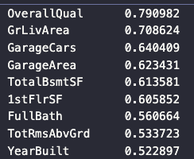
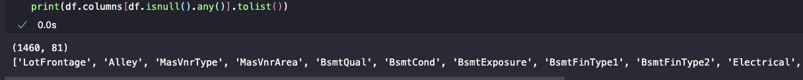
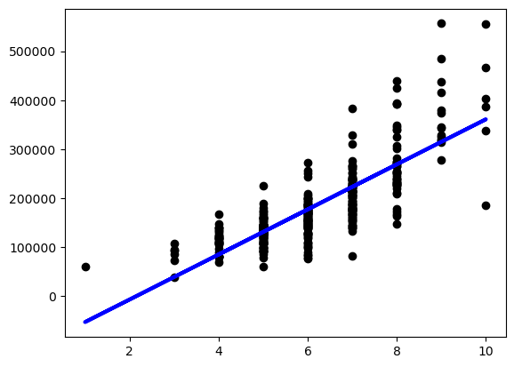
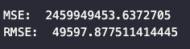

PROJECT 3 - Looking into house price prediction, Regression
Introduction to the Problem
Housing markets vary depending on a lot of different features, making it challenging to predict housing sale costs. The goal of this project is to explore a housing data dataset, use regression techniques to try and figure out what features impact housing prices the most, and train a model to predict the price of a house.
The Data
The dataset comes from the Kaggle competition titled "House Prices: Advanced Regression Techniques." The data consists of a training set of size (1460, 81), where:
- 1460 represents the number of house sale records.
- 81 columns represent various features of these houses and their sale details. This includes:
- SalePrice: the target feature - the property's sale price in dollars
- Other features include quality, fireplaces, driveways, and other features you would expect in a house.
What is Regression?
Regression is a machine learning technique examining the relationship between independent and dependent variables. By fitting a model to data, it can predict the expected value of a dependent variable based on a set of trained data.
This project uses two forms of Regression: Linear and polynomial Regression. Linear regression handles linear relationships, while polynomial regression handles continuous relationships that might not be easily described as linear.
Experiment 1:
Correlation Map

The next part was understanding what features impacted the target the most. I first tried to take a look at the heatmap, but there is a lot of potential features. In summary, the most significant features are as follows:
Experiment 1: Pre-processing
The first thing done was to load the dataset and look at the datatypes. Off the bat, I noticed a lot of non-numeric datatypes indicating that some form of one-hot encoding would be needed.
I also checked for a list of columns that had any null values as well as dropped the ID column. I noticed many columns had null values, but after further inspection, those values that did have null values were false nulls. The NA values represent the lack of that feature in the home, not the lack of data in that field.
Experiment 1: Modeling
For Experiment one, I built a model to predict the sale of a house based on the most impactful feature OveralQual. I used sklearns LinearRegression model to do so. I split the data into training and test sets and then passed that into the prediction model.
Experiment 1: Evaluation
To evaluate the model, I used both MSE and RMSE. In general lower values indicates a better fit and considering the graph above I suspect a poor fit
These values do indicate a very poor performing model which I try to fix in Experiment 2
Experiment 2
For experiment two, I wanted to take a different approach to what features I was taking in for the X values of the model. Instead of just one key feature, I used all features except for the target feature.
Additionally, I split the data in a 20/80 split for testing and training. For experiment 2, I still used a linear regression model. Allowing for more features to be trained off of did improve the model. However, not by much, with a new RMSE value of 31305. The model is fitting better but still needs improvement. This made me want to try using polynomial regression instead.
Experiment 3
For experiment three, I only used the top 5 features in the set that had the greatest correlation. I kept the 20/80 split but changed the model form linear to polynomial
Supprisingly the model performed significantly worse! scoreing MSE and RMSE scores of 1.0369585121774155e+20 and 10183115987.640598 respectivly
Impact
Having a model that can predict sales prices of houses can be used in Real Estate Market Analysis and also help real estate investors and marketers figureout potential costs of a home.
Negative impacts could include potentially being used to only create houses that produce the highest potential sale price, which can potentially outprice people out of owning a home.
Conclussion
This project gave productive insights into linear regression and how to set up a model. Some features impact model performance more than others. As well as different models are used in different instances. If I were to go back and redo some experiments, I think I would do feature selection differently. And spend more time focusing on improving model performance.
References
- https://www.kaggle.com/competitions/house-prices-advanced-regression-techniques/rules
- https://seaborn.pydata.org/
- https://pandas.pydata.org/docs/
- https://scikit-learn.org/stable/modules/generated/sklearn.preprocessing.PolynomialFeatures.html
- https://towardsdatascience.com/polynomial-regression-bbe8b9d97491
Code
All Code, along with the Jupeter Notebook Version of this Page can be found here